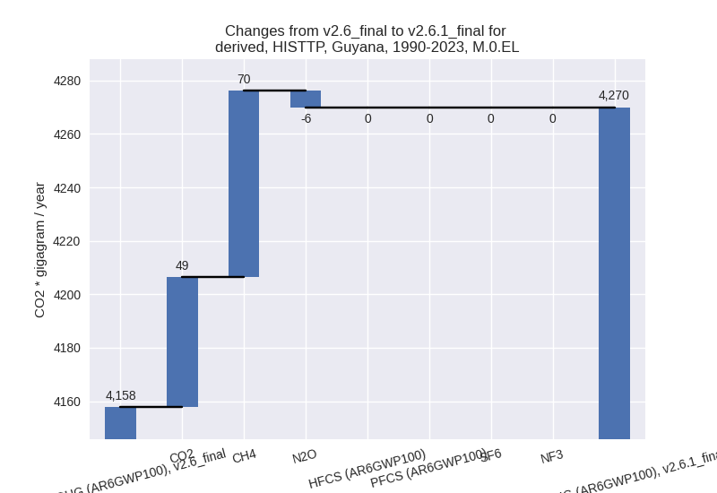
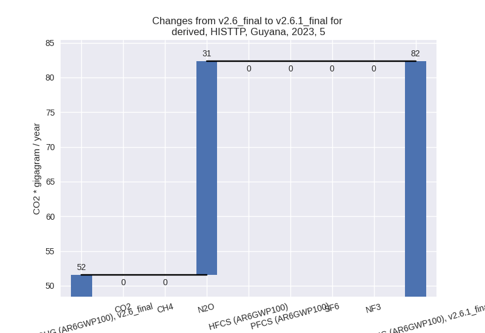

Changes in PRIMAP-hist v2.6.1_final compared to v2.6_final for Guyana
2025-03-19
Johannes Gütschow
Change analysis for Guyana for PRIMAP-hist v2.6.1_final compared to v2.6_final
Overview over emissions by sector and gas
The following figures show the aggregate national total emissions excluding LULUCF AR6GWP100 for the country reported priority scenario. The dotted linesshow the v2.6_final data.
The following figures show the aggregate national total emissions excluding LULUCF AR6GWP100 for the third party priority scenario. The dotted linesshow the v2.6_final data.

Overview over changes
In the country reported priority scenario we have the following changes for aggregate Kyoto GHG and national total emissions excluding LULUCF (M.0.EL):
- Emissions in 2023 have changed by 91.1%% (3873.46 Gg CO2 / year)
- Emissions in 1990-2023 have changed by 21.9%% (766.98 Gg CO2 / year)
In the third party priority scenario we have the following changes for aggregate Kyoto GHG and national total emissions excluding LULUCF (M.0.EL):
- Emissions in 2023 have changed by 29.9%% (1558.68 Gg CO2 / year)
- Emissions in 1990-2023 have changed by 2.7%% (112.18 Gg CO2 / year)
Most important changes per scenario and time frame
In the country reported priority scenario the following sector-gas combinations have the highest absolute impact on national total KyotoGHG (AR6GWP100) emissions in 2023 (top 5):
- 1: 1.B.2, CH4 with 1996.76 Gg CO2 / year (inf%)
- 2: 1.A, CO2 with 813.91 Gg CO2 / year (36.5%)
- 3: 1.B.2, CO2 with 661.52 Gg CO2 / year (inf%)
- 4: 4, CH4 with 343.95 Gg CO2 / year (399.1%)
- 5: M.AG.ELV, N2O with 282.28 Gg CO2 / year (138.8%)
In the country reported priority scenario the following sector-gas combinations have the highest absolute impact on national total KyotoGHG (AR6GWP100) emissions in 1990-2023 (top 5):
- 1: M.AG.ELV, N2O with 299.60 Gg CO2 / year (155.8%)
- 2: 4, CH4 with 283.98 Gg CO2 / year (400.3%)
- 3: M.AG.ELV, CH4 with -255.29 Gg CO2 / year (-27.7%)
- 4: 1.B.2, CH4 with 172.03 Gg CO2 / year (inf%)
- 5: 1.A, CO2 with 164.51 Gg CO2 / year (9.6%)
In the third party priority scenario the following sector-gas combinations have the highest absolute impact on national total KyotoGHG (AR6GWP100) emissions in 2023 (top 5):
- 1: 1.B.2, CH4 with 1433.36 Gg CO2 / year (inf%)
- 2: 1.B.2, CO2 with 277.37 Gg CO2 / year (inf%)
- 3: 2, CO2 with -144.08 Gg CO2 / year (-90.3%)
- 4: 4, CH4 with -58.69 Gg CO2 / year (-11.9%)
- 5: 5, N2O with 30.78 Gg CO2 / year (59.7%)
In the third party priority scenario the following sector-gas combinations have the highest absolute impact on national total KyotoGHG (AR6GWP100) emissions in 1990-2023 (top 5):
- 1: 1.B.2, CH4 with 124.20 Gg CO2 / year (inf%)
- 2: 1.B.2, CO2 with 58.29 Gg CO2 / year (inf%)
- 3: 4, CH4 with -56.02 Gg CO2 / year (-12.6%)
- 4: 2, CO2 with -38.20 Gg CO2 / year (-94.9%)
- 5: M.AG.ELV, CO2 with 28.61 Gg CO2 / year (inf%)
Notes on data changes
Here we list notes explaining important emissions changes for the country.
- CRT data from BTR1 covering 1990-2022 has been added. It replaces
and extends DI data.
- The main changes for 2023 are for the energy sector, where CO2 emissions in 1.A are higher and CO2 and CH4 emissions for 1.B.2 are present for the first time. Further important changes come from the waste and the agricultural sectors.
- For cumulative emissions the changes for waste and agriculture are more important than the energy sector changes.
- As emissions pre-1990 are similar to emissions for later years and relatively constant the changes in country reported data also affect earlier emissions.
- In the TP scenario less sectors are affected. The main driver of higher emissions is the addition for CH4 and CO2 data for fugitive emissions from oil and gas (1.B.2)
Changes by sector and gas
For each scenario and time frame the changes are displayed for all individual sectors and all individual gases. In the sector plot we use aggregate Kyoto GHGs in AR6GWP100. In the gas plot we usenational total emissions without LULUCF.
country reported scenario
2023
1990-2023
third party scenario
2023
1990-2023

Detailed changes for the scenarios:
country reported scenario (HISTCR):
Most important changes per time frame
For 2023 the following sector-gas combinations have the highest absolute impact on national total KyotoGHG (AR6GWP100) emissions in 2023 (top 5):
- 1: 1.B.2, CH4 with 1996.76 Gg CO2 / year (inf%)
- 2: 1.A, CO2 with 813.91 Gg CO2 / year (36.5%)
- 3: 1.B.2, CO2 with 661.52 Gg CO2 / year (inf%)
- 4: 4, CH4 with 343.95 Gg CO2 / year (399.1%)
- 5: M.AG.ELV, N2O with 282.28 Gg CO2 / year (138.8%)
For 1990-2023 the following sector-gas combinations have the highest absolute impact on national total KyotoGHG (AR6GWP100) emissions in 1990-2023 (top 5):
- 1: M.AG.ELV, N2O with 299.60 Gg CO2 / year (155.8%)
- 2: 4, CH4 with 283.98 Gg CO2 / year (400.3%)
- 3: M.AG.ELV, CH4 with -255.29 Gg CO2 / year (-27.7%)
- 4: 1.B.2, CH4 with 172.03 Gg CO2 / year (inf%)
- 5: 1.A, CO2 with 164.51 Gg CO2 / year (9.6%)
Changes in the main sectors for aggregate KyotoGHG (AR6GWP100) are
- 1: Total sectoral emissions in 2022 are 6109.50 Gg
CO2 / year which is 72.2% of M.0.EL emissions. 2023 Emissions have
changed by 150.6% (3459.13 Gg CO2 /
year). 1990-2023 Emissions have changed by 23.8% (424.34 Gg CO2 / year). For 2023 the
changes per gas
are:
For 1990-2023 the changes per gas are:
The changes come from the following subsectors:- 1.A: Total sectoral emissions in 2022 are 3015.78
Gg CO2 / year which is 49.4% of category 1 emissions. 2023 Emissions
have changed by 35.0% (803.73 Gg CO2
/ year). 1990-2023 Emissions have changed by 8.7% (155.44 Gg CO2 / year). For 2023 the
changes per gas
are:
For 1990-2023 the changes per gas are:
There is no subsector information available in PRIMAP-hist. - 1.B.1: Total sectoral emissions in 2022 are 0.00 Gg
CO2 / year which is 0.0% of category 1 emissions. 2023 Emissions have
changed by -100.0% (-3.77 Gg CO2 /
year). 1990-2023 Emissions have changed by -100.0% (-3.48 Gg CO2 / year). For 2023
the changes per gas
are:
For 1990-2023 the changes per gas are:
There is no subsector information available in PRIMAP-hist. - 1.B.2: Total sectoral emissions in 2022 are 3093.73
Gg CO2 / year which is 50.6% of category 1 emissions. 2023 Emissions
have changed by inf% (2659.17 Gg CO2
/ year). 1990-2023 Emissions have changed by inf% (272.38 Gg CO2 / year). For 2023 the
changes per gas
are:
For 1990-2023 the changes per gas are:
There is no subsector information available in PRIMAP-hist.
- 1.A: Total sectoral emissions in 2022 are 3015.78
Gg CO2 / year which is 49.4% of category 1 emissions. 2023 Emissions
have changed by 35.0% (803.73 Gg CO2
/ year). 1990-2023 Emissions have changed by 8.7% (155.44 Gg CO2 / year). For 2023 the
changes per gas
are:
- 2: Total sectoral emissions in 2022 are 1.29 Gg CO2
/ year which is 0.0% of M.0.EL emissions. 2023 Emissions have changed by
-90.4% (-144.74 Gg CO2 / year).
1990-2023 Emissions have changed by -95.0% (-38.83 Gg CO2 / year). For 2023
the changes per gas
are:
For 1990-2023 the changes per gas are: - M.AG: Total sectoral emissions in 2022 are 1907.14
Gg CO2 / year which is 22.5% of M.0.EL emissions. 2023 Emissions have
changed by 16.2% (265.23 Gg CO2 /
year). 1990-2023 Emissions have changed by 11.1% (168.91 Gg CO2 / year). For 2023 the
changes per gas
are:
For 1990-2023 the changes per gas are:
The changes come from the following subsectors:- 3.A: Total sectoral emissions in 2022 are 599.05 Gg
CO2 / year which is 31.4% of category M.AG emissions. 2023 Emissions
have changed by 35.7% (155.59 Gg CO2
/ year). 1990-2023 Emissions have changed by 23.6% (95.99 Gg CO2 / year). For 2023 the
changes per gas
are:
For 1990-2023 the changes per gas are:
There is no subsector information available in PRIMAP-hist. - M.AG.ELV: Total sectoral emissions in 2022 are
1308.09 Gg CO2 / year which is 68.6% of category M.AG emissions. 2023
Emissions have changed by 9.1%
(109.64 Gg CO2 / year). 1990-2023 Emissions have changed by 6.6% (72.92 Gg CO2 / year). For 2023 the
changes per gas
are:
For 1990-2023 the changes per gas are:
There is no subsector information available in PRIMAP-hist.
- 3.A: Total sectoral emissions in 2022 are 599.05 Gg
CO2 / year which is 31.4% of category M.AG emissions. 2023 Emissions
have changed by 35.7% (155.59 Gg CO2
/ year). 1990-2023 Emissions have changed by 23.6% (95.99 Gg CO2 / year). For 2023 the
changes per gas
are:
- 4: Total sectoral emissions in 2022 are 443.75 Gg
CO2 / year which is 5.2% of M.0.EL emissions. 2023 Emissions have
changed by 335.2% (345.38 Gg CO2 /
year). 1990-2023 Emissions have changed by 338.3% (287.04 Gg CO2 / year). For 2023
the changes per gas
are:
For 1990-2023 the changes per gas are: - 5: Total sectoral emissions in 2022 are 0.00 Gg CO2
/ year which is 0.0% of M.0.EL emissions. 2023 Emissions have changed by
-100.0% (-51.54 Gg CO2 / year).
1990-2023 Emissions have changed by -100.0% (-74.49 Gg CO2 / year). For 2023
the changes per gas
are:
For 1990-2023 the changes per gas are:
third party scenario (HISTTP):
Most important changes per time frame
For 2023 the following sector-gas combinations have the highest absolute impact on national total KyotoGHG (AR6GWP100) emissions in 2023 (top 5):
- 1: 1.B.2, CH4 with 1433.36 Gg CO2 / year (inf%)
- 2: 1.B.2, CO2 with 277.37 Gg CO2 / year (inf%)
- 3: 2, CO2 with -144.08 Gg CO2 / year (-90.3%)
- 4: 4, CH4 with -58.69 Gg CO2 / year (-11.9%)
- 5: 5, N2O with 30.78 Gg CO2 / year (59.7%)
For 1990-2023 the following sector-gas combinations have the highest absolute impact on national total KyotoGHG (AR6GWP100) emissions in 1990-2023 (top 5):
- 1: 1.B.2, CH4 with 124.20 Gg CO2 / year (inf%)
- 2: 1.B.2, CO2 with 58.29 Gg CO2 / year (inf%)
- 3: 4, CH4 with -56.02 Gg CO2 / year (-12.6%)
- 4: 2, CO2 with -38.20 Gg CO2 / year (-94.9%)
- 5: M.AG.ELV, CO2 with 28.61 Gg CO2 / year (inf%)
Changes in the main sectors for aggregate KyotoGHG (AR6GWP100) are
- 1: Total sectoral emissions in 2022 are 4532.87 Gg
CO2 / year which is 66.0% of M.0.EL emissions. 2023 Emissions have
changed by 63.9% (1702.27 Gg CO2 /
year). 1990-2023 Emissions have changed by 9.4% (181.67 Gg CO2 / year). For 2023 the
changes per gas
are:
For 1990-2023 the changes per gas are:
The changes come from the following subsectors:- 1.A: Total sectoral emissions in 2022 are 2579.34 Gg CO2 / year which is 56.9% of category 1 emissions. 2023 Emissions have changed by -0.4% (-9.99 Gg CO2 / year). 1990-2023 Emissions have changed by -0.1% (-1.09 Gg CO2 / year).
- 1.B.1: Total sectoral emissions in 2022 are 3.77 Gg CO2 / year which is 0.1% of category 1 emissions. 2023 Emissions have changed by -0.1% (-0.00 Gg CO2 / year). 1990-2023 Emissions have changed by -0.0% (-0.00 Gg CO2 / year).
- 1.B.2: Total sectoral emissions in 2022 are 1949.76
Gg CO2 / year which is 43.0% of category 1 emissions. 2023 Emissions
have changed by inf% (1712.26 Gg CO2
/ year). 1990-2023 Emissions have changed by inf% (182.76 Gg CO2 / year). For 2023 the
changes per gas
are:
For 1990-2023 the changes per gas are:
There is no subsector information available in PRIMAP-hist.
- 2: Total sectoral emissions in 2022 are 1.95 Gg CO2
/ year which is 0.0% of M.0.EL emissions. 2023 Emissions have changed by
-90.0% (-144.08 Gg CO2 / year).
1990-2023 Emissions have changed by -93.5% (-38.20 Gg CO2 / year). For 2023
the changes per gas
are:
For 1990-2023 the changes per gas are:
- M.AG: Total sectoral emissions in 2022 are 1858.38 Gg CO2 / year which is 27.1% of M.0.EL emissions. 2023 Emissions have changed by 1.5% (26.82 Gg CO2 / year). 1990-2023 Emissions have changed by 2.0% (32.78 Gg CO2 / year).
- 4: Total sectoral emissions in 2022 are 442.01 Gg
CO2 / year which is 6.4% of M.0.EL emissions. 2023 Emissions have
changed by -11.3% (-57.10 Gg CO2 /
year). 1990-2023 Emissions have changed by -12.2% (-55.76 Gg CO2 / year). For 2023
the changes per gas
are:
For 1990-2023 the changes per gas are: - 5: Total sectoral emissions in 2022 are 32.60 Gg
CO2 / year which is 0.5% of M.0.EL emissions. 2023 Emissions have
changed by 59.7% (30.78 Gg CO2 /
year). 1990-2023 Emissions have changed by -11.1% (-8.30 Gg CO2 / year). For 2023 the
changes per gas
are:

For 1990-2023 the changes per gas are: